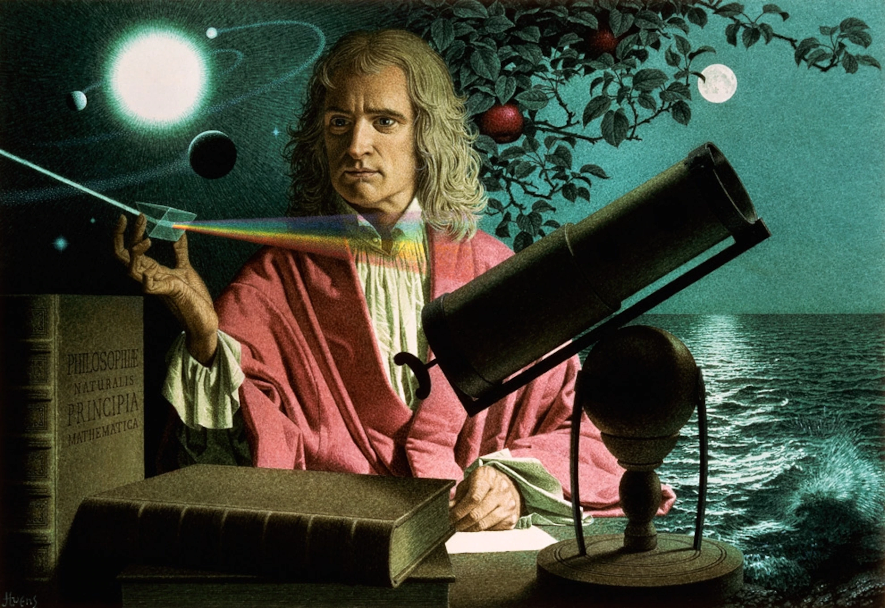

Сізге 9"Б" сыныбы Иcaак Ньютон ғалым туралы ақпараттар жинағы көрсетілімде, Иcaак Ньютон ия ия сол кісі тартылыс күшінің заның ашқан болатын және Ньютоннің үш заңы бар
😀
Ньютон деген кезде естеріңізге бірден басына алма түсіп, оның тартылыс заңын ашқаны түсетін шығар. Алайда оның ғылымға әкелген жаңалығы тек мұнымен шектелмейді. Олай болса, назарларыңызға ұлы ғалымның ғылымға енгізген жаңалықтарын ұсынамыз. Адамзат тарихындағы ғылымның ең үлкен жаңалығын ашқан XVII ғасырдың ұлы ғалымы Исаак Ньютон 1642 жылы Англия елінде дүниеге келеді. Бала күнінен механика саласында қабілеттілігімен көзге түседі. Мұнымен қатар жаңа ақпаратты жылдам қабылдайтын болған. Өзінің ақылды екенін білсе де, мектептегі құрбы-құрдастарынан ерекшеленгісі келмеген. Ал анасы баласын болашақта ауыл шарушылығымен айналысады деп оқудан шығарып алады. Көп ұзамай жасы он сегізге толғанда Кембридж университетіне оқуға түсіп, сол жерде математика, жаратылыстану ғылымдарымен айналысады. Ньютон 21-28 жасында өзінің негізгі теориялық дерегімен ғылым тарихында үлкен төңкеріс жасады. Осындай жетістіктерді ескере отырып, XVII ғасырдың орта кезеңі Өркендеу уақыты саналды. Сол дәуірдегі телескоптың ашылуы астрономия ғылымына жаңалық болды. Ағылшын философы Фрэнсис Бэкон мен француз философы Рене Декарт Еуропаны жеке ізденістермен айналысуға шақырды. Ал Галилейдің телескоппен жасаған зерттеуі мен тәжірибесі Исаакты Ньютонды механиканың бірінші заңын ашуға итермеледі. Бұдан өзге тарих ғылымына елеулі өзгеріс алып келгендердің саны артты. Мысалы, Гарвей медицина саласында қан айналымын, Кеплер Күнді айналатын ғаламшар қозғалысы заңын ашты. Осылайша ғалымдар ғылымның әлемді түпкілікті өзгерте алатынына көз жеткізді. Жоғарыда көп ғалымды атасақ та, Ньютон үнемі қоғамға өзі жасаған тәжірибе қорытындысын жариялап отырды. Ең алғаш құрастырған тұжырымы 1669 жылы шығып, артынша оған өзгертулер енгізді. Құрастырған басты концепциялары 1669 жылы шықты, ал өзге зерттеулері кешірек жарық көрді. Алғашқы жұмысы ретінде табиғат жарығы туралы керемет кітабы өмірге келді. Көптеген зерттеу сынағын жүргізіп, Ньютон жай ақ түстің өзі кемпірқосақ түстерінің қосындыларынан құралғанын анықтады. Мұнымен қатар 1668 жылы рефрактор телескопын жасап шығарды. Оны қазіргі таңда аспан денелерін зерттейтін обсерваторияда қолданады.
Isaac Newton(Исаак Ньтонның ашқан жаңалықтары)